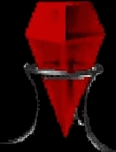

|

|
When held up to the light, this prism refracts a pretty rainbow of colors. If the legends of these magical items hold true, however, its true worth lies in its ability to focus the magical energies of multiple spellcasters for the casting of certain special spells. According to the mages of antiquity, a prism must be placed upon the ground before a spell may be focused through it. Once casting has begun, as many mages as the prism has sides may contribute to the energies stored within, and at least one mage must be casting at all times to keep the stored energy from dissipating. The spell being chanted will fire when enough magical power has been stored in the prism and there is exactly one caster for each side of the prism. This prism has (number) sides.
|
Info & Tips
|
- Source:
- Brax Skeletons
- Favors (Parrin, Maleval)
- Use: Has 3, 5 or 7 Sides. However many sides = how many players needed to concentrate on the spell that needs a prism to cast.
|
|